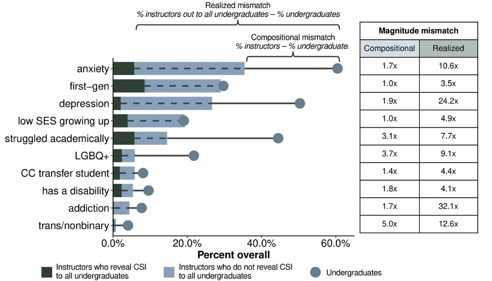

The Representation of Concealable Identities Among College Science Instructors at Research Institutions
Busch, C. A., Araghi, T., He, J., Cooper, K. M., & Brownell, S. E. (2024). Beyond Gender and Race: The Representation of Concealable Identities Among College Science Instructors at Research Institutions. CBE—Life Sciences Education, 23(2), ar9.
What it says
- In contrast to race and gender, for which a person's group identity is visible (with the caution that for some people, their apparent identity does not match their actual identity), a concealable identity is one that cannot generally be known without that person choosing to reveal it. Relevant examples for the present study include depression, anxiety, LGBTQ+ identities, or having been a first-generation college student.
- More than just being concealable, the examples listed can also be associated with negative stereotypes, so these are referred to by the authors as concealable stigmatized identities (CSIs).
- The current study sought to understand whether the frequency of CSIs was similar between college instructors and undergraduates and if/why instructors revealed their CSIs to their students. Ultimately the authors obtained 1248 usable responses from instructors and 2428 from undergraduates.
- The major findings, as shown in the figure below, show that, whereas the underlying rates of CSIs are sometimes similar between instructors and students, the apparent difference in these rates is always quite high because most instructors choose not to reveal their CSIs to students.

Shows the differences among the fraction of instructors reporting each of the CSIs (lighter bars), the fraction of instructors who actively disclose that identity to their students (darker bars), and the fraction of undergraduates who report these identities (points). These data allow us to examine whether each CSI is actually less common among instructors (referred to as the compositional mismatch) and/or whether each CSI might be perceived to be less common because instructors choose not to disclose it (called the realized mismatch). Compositional mismatches range from essentially zero for low socioeconomic or first-generation status to around 2x for anxiety and depression to 4–5x for LGBQ+ or trans/nonbinary identities. However, realized mismatches are much higher, ranging from around 4x to 10 or 20 fold lower rates of disclosed identities as compared to the true rate among students (Modified from Busch et al., Figure 2).
What we might learn from it
- While instructors are less likely to report many of these CSIs than undergraduates, this study makes it clear that these identities are still quite common among instructors. However, the low rates of active disclosure of CSIs means that students, including those who hold these identities themselves, may well imagine that "people like them" don't or can't succeed in science.
- The authors argue (including from a previously published study and a second under review) that an instructor's disclosure of a CSI can directly benefit students and can particularly benefit students who share that CSI. Their survey data in this study also show that the instructors who report revealing their CSIs commonly do so to be an example, supporter, or mentor to students with that identity.
- This is far from a universal recommendation though. Some instructors will not be comfortable disclosing their CSIs, whether that is because they see it as a fundamentally private matter, because they perceive it to be at odds with or inappropriate to their role as instructors, or for reasons of personal safety.
- In any event, it is important to be aware of CSIs as a category and for instructors to at least make a conscious choice to reveal or not reveal these identities, particularly in light of the benefits shown for students.